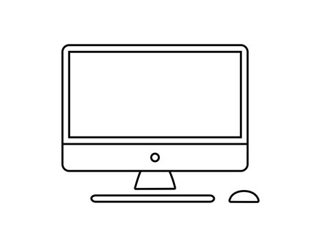

I was born on october 16 2003.
As a child, I was very
adventourous. Me and my older sister were always curious to discover
and learn.
Our father is very keen on exploring and I suppose
that's who we inherited it from. Growing up he would always take us
on field trips and try to make us as aware as possible about our
surroundings.
I attended the same school from kindergarten all the way untill i
graduated highschool, which may have made weakened my interaction
skills.

After I became a teenager, I learned many things about myself. I
grew closer to my religion and started being more aware of different
situations of my country and the world.
I decided I wanted to be a software engineer student then, when I
realized I was more of a person who preferred critical thinking
instead of cramming.

When I enrolled in university in April of 2022, it was a big change,
considering I had known and became accustomed to the schoolmates I
had my entire life.
As time went on I learned and grew. I worked on my sociak anxiety
and maintaing my schedule. As of becoming a software engineer, I
have been able to learn many new academic and personal skills and
hope to continue on this road to mastery.